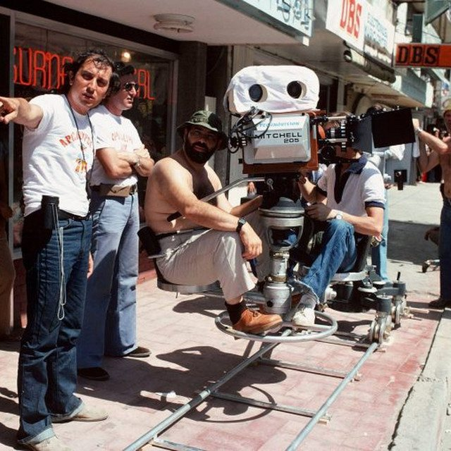

The Eclectic Polymath Podcast · Archive
#208 New Hollywood: The Decade the Directors Took Over

About this episode
In 1967, American movies changed their mind about everything. The studio system that had run Hollywood for forty years collapsed — and for one strange decade, the keys went to film-school kids, method actors who looked like people you knew, and cinematographers who shot in the dark. The Godfather, Taxi Driver, Chinatown, Jaws: the most celebrated run of films in the country's history came from the industry briefly losing control of itself.
Key points
- The Godfather, Taxi Driver, Chinatown, Jaws: the most celebrated run of films in the country's history came from the industry briefly losing control of itself.
- the Paramount Decrees and television gutting the old studios, Bonnie and Clyde and Easy Rider proving a young audience existed, the 1968 ratings system replacing the censors, and the auteurs
- Coppola, Scorsese, Altman, Ashby, Friedkin
- Final cut and percentage deals, CAA founded mid-decade, Vietnam and Watergate pouring into the paranoia cycle.
- Then the counter-revolution from inside: Jaws and Star Wars inventing the blockbuster, Heaven's Gate bankrupting the experiment.
More like this
 #219 The Grove & The Americana: Fake Towns, Real EmpireOctober 17, 202649:36
#219 The Grove & The Americana: Fake Towns, Real EmpireOctober 17, 202649:36 #220 Nathan Fielder: The Man Who Rehearsed RealityOctober 17, 202650:01
#220 Nathan Fielder: The Man Who Rehearsed RealityOctober 17, 202650:01 #215 Nithya Raman: Hollywood's Socialist Is Leading the Mayor's RaceOctober 16, 202644:08
#215 Nithya Raman: Hollywood's Socialist Is Leading the Mayor's RaceOctober 16, 202644:08 #216 How Karen Bass Became the EstablishmentOctober 16, 202655:02
#216 How Karen Bass Became the EstablishmentOctober 16, 202655:02